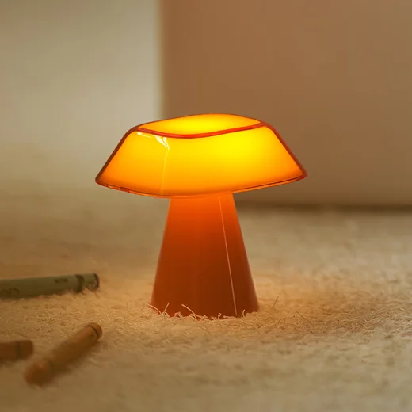
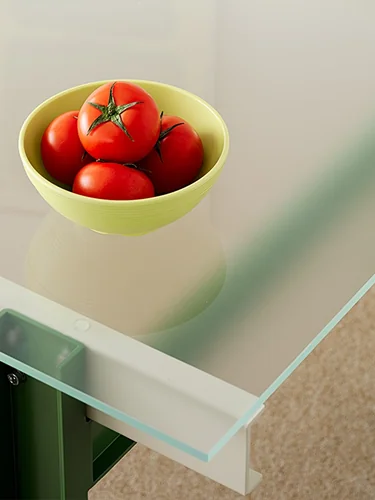
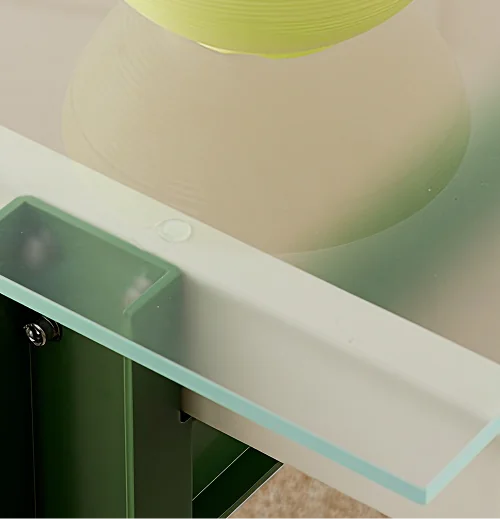
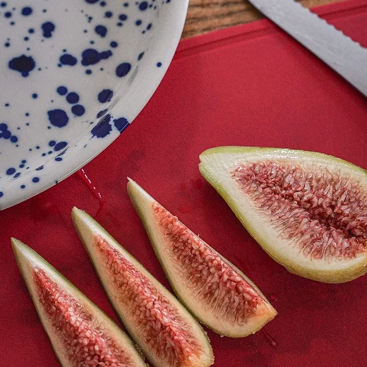

01
Placeholder
색의 첫 번째 원칙 (정리 예정)
짧은 부제 한 줄 (정리 예정).
여기에 첫 번째 원칙의 본문이 들어갑니다. 톤 결정의 기준, 색이 어디에서 길어 올려지는지, 어떤 결을 지키려 하는지를 풀어쓰는 자리 (정리 예정).
색의 결 · (정리 예정)




오늘의집의 색은 일상의 풍경에서 길어 올린 톤으로, 사람과 공간이 만나는 그 결을 시각의 언어로 옮겨 둔 결과입니다. (정리 예정)
짧은 부제 한 줄 (정리 예정).
여기에 첫 번째 원칙의 본문이 들어갑니다. 톤 결정의 기준, 색이 어디에서 길어 올려지는지, 어떤 결을 지키려 하는지를 풀어쓰는 자리 (정리 예정).
짧은 부제 한 줄 (정리 예정).
두 번째 원칙의 본문이 들어갈 자리입니다. 절제·강조의 균형, 어디까지 채도를 허용할지 같은 결정을 풀어쓰는 자리 (정리 예정).
짧은 부제 한 줄 (정리 예정).
세 번째 원칙의 본문이 들어갈 자리입니다. 색의 위계, 주연·조연의 분리, 한 화면 안에서의 합주 방식을 풀어쓰는 자리 (정리 예정).
짧은 부제 한 줄 (정리 예정).
네 번째 원칙의 본문이 들어갈 자리입니다. 시간이 지나도 흐트러지지 않는 일관성, 매체 간 색 재현의 기준을 풀어쓰는 자리 (정리 예정).